この動画で伝える一文
「こんなマネージャーになってはいけない」を、相手へ突きつける要求だと思っている人に、同じ一文でも自戒として受け取るのと要求として突きつけるのとでは意味がまるで違い、マネージャーは答えを知っている先生でもスーパーマンでもなく互いの立場でチームの成果をつくることを伝え、自分の立場で何ができるかを考え抜くという手応えを残す。
01の「自戒」と「要求」、07の「考え抜く。」だけで、同じ主張が通るようにします。01の声は向きの違いを言い、07の声は、先生でもスーパーマンでもないこと、互いの立場で成果をつくること、自分の立場で考え抜くことまで言います。動画の題は記事の題のままです。
留保は03、04、06、07に置きます。自戒としては価値がある。苦しい現場があるのも事実。経験の差が圧倒的な関係なら、教える構図は成り立つ。近くても遠くても批判される立場で、一人の人間に完璧は重い。完璧なマネジメントは最初から無い。最後は本人の結論で閉じ、視聴者への問いかけや、両論を同じ比重にしたまとめにはしません。メンバーを責める絵で終わらせず、05で環境と成果を同じ大きさで並べ、07で両方の立場へ矢印を戻します。
視聴者
マネジメントの言葉を、される側から上司へ突きつけるリストとして読んでしまう人。管理する側で、その言葉を自戒にできるか迷っている人。見終わったあと、相手の欠点を数える前に、自分の立場で何ができるかを考え始められるようにします。
構成と尺
声は理由・留保・本人の結論の範囲を、文字は主張と決め語を、図形は言葉の向き・要求の列・前提の枠・両輪・一人への期待を受け持ちます。全文字幕は足しません。写真と動画は使いません。
本編126.6秒、全体132.1秒です。声は603字。5.5字/秒を仮の読み速度とすると約109.6秒です。残りは、7カット×約2秒（声の前0.5秒、後ろ約1.5秒）と、07で結びを受け取る約3秒です。5.5字/秒は、過去の日本語ナレーションの実測（約5.5〜5.7字/秒）に合わせた目安で、語の読みと間で実測は変わります。制作側が声と画を合わせて調整します。3分には伸ばしません。尺が足りなければ、04の経験差の例と06の人数の例から詰め、01の主張、03の留保、05の両輪、07の結論は残します。
| カット | 区間 | この区間で分かってほしいこと | 声／画面 |
|---|---|---|---|
| 01 矢は、自分へ。 | 0:00.0–0:14.7（14.7秒） | 同じ一文でも、自戒と要求では意味が違う | 70字／30字 |
| 02 要求の列になる。 | 0:14.7–0:25.8（11.1秒） | 一文が、相手への要求の三行に組み替わる | 50字／52字 |
| 03 自戒なら、価値がある。 | 0:25.8–0:42.5（16.7秒） | 自戒としては価値がある。苦しい現場もある | 81字／21字 |
| 04 先生では、ない。 | 0:42.5–1:03.8（21.3秒） | 答えを知っている前提が外れる。仕事はチームで勝たせること | 106字／26字 |
| 05 両輪が、要る。 | 1:03.8–1:26.2（22.4秒） | 任される側の仕事ぶりと、環境をつくる側。同じ大きさ | 112字／20字 |
| 06 スーパーマンでは、ない。 | 1:26.2–1:41.6（15.4秒） | 一人の人間に、完璧な加減は重すぎる | 74字／23字 |
| 07 自分の立場で、考え抜く。 | 1:41.6–2:06.6（25.0秒） | 矢印が自分の立場へ戻る。本人の結論 | 110字／29字 |
| 08 エンドロゴ | 2:06.6–2:12.1（5.5秒） | 制作表示 | 0字／0字 |
字数は空白・改行を除き、句読点を含みます。画面は各カットの「画面の文字」に掲げた文言の合計です。同一文言の再登場はカットごとに数えます。07の25.0秒には、結びを受け取る約3秒を含みます。
カット表・絵コンテ
各カットの開始と終了を画像で示します。コマ画は構図の設計資料です。番号、はじめ、おわりは画像の外だけに書きます。章表示、テロップ帯、エンドクレジットは入れません。秒数・位置・角度は参考値です。制作側は動きの狙いと可読性を満たす方法を選べます。大きな画面運動を、入口と出口だけに限定しません。カメラの名前はカメラワークと切り替えの名前に合わせ、図の層だけに掛けます。
矢は、自分へ。
0:00.0–0:14.7 / 14.7秒 ・ 主張 ・ 声70字／画面30字

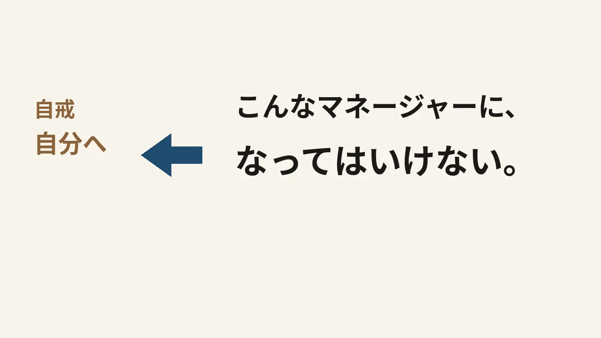

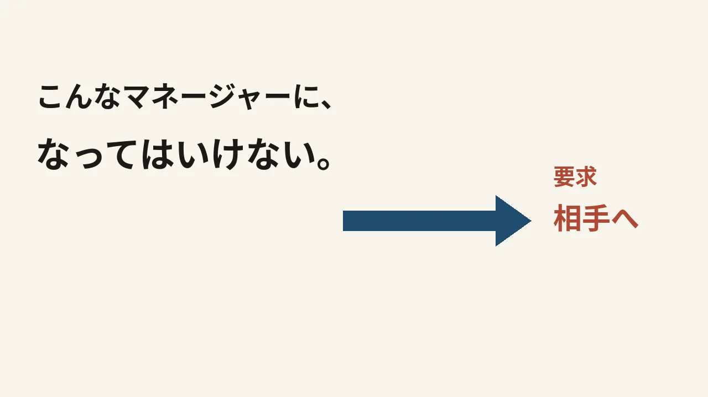
こんなマネージャーに、
なってはいけない。
自戒
自分へ
要求
相手へ
「こんなマネージャーになってはいけない」。同じ一文でも、自戒として受け取るのと、相手への要求として突きつけるのとでは、意味がまるで違います。
はじめは左の粘土色の二段と、右の墨の二段。矢印は左向きです。おわりは一文が左へ寄り、矢印は右向き、珊瑚の「要求」「相手へ」が右端です。一文は塊のままで、1字には分けません。
- 一文が行のマスクから右へ大きく入る。「自戒」「自分へ」は声の「自戒として」に着地する。
- 読む間、一文の塊と矢印を逆方向へ流す。字形は崩さない。
- 声の「突きつける」で、矢印が厚みを見せながら半回転し、頭が「相手へ」に出る。「要求」がそのとき着地する。
- 向きが変わった一文を、02で三つの行へ割る。
図の層だけを、矢印が回るあいだ少し引いて厚みを見せ（ドリーインの逆）、文字は正面の層のままです。文字を矢印のテクスチャにしません。
図形と文字。矢印は軸と頭が一つの形です。実在の資料、投稿、人名は出しません。
要求の列になる。
0:14.7–0:25.8 / 11.1秒 ・ 組み替え ・ 声50字／画面52字

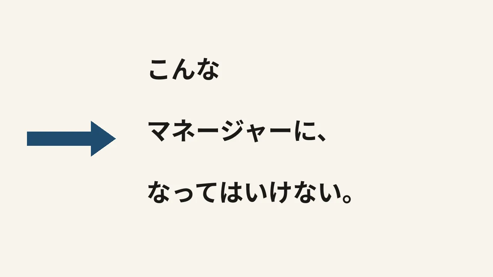

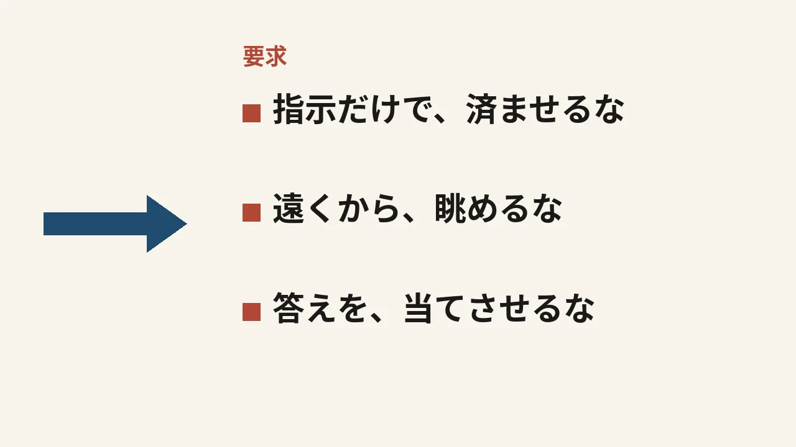
こんな
マネージャーに、
なってはいけない。
要求
指示だけで、済ませるな
遠くから、眺めるな
答えを、当てさせるな
その一文が割れて、相手への要求のリストになります。自戒として置いた言葉が、相手への注文に変わります。
はじめは左の矢印と、右に割れた三行。おわりは同じ位置の三行が要求の文言に替わり、各行の左に珊瑚の印が付きます。「要求」は列の上の小さい語です。三行は同じ左端、同じ大きさです。
- 三行が奥行きの違う速度で上下に開く。近い行ほど大きく動きます。
- 各行が板になって奥へ半回転し、真横を向いた瞬間に裏面の要求へ替わる。読める角度では字形を傾けたまま止めません。
- 三行目の着地は声の「注文に変わります」。印は行が正面に戻ってから付きます。
- 列が左へ縮み、03の三本の棒になる。
三行の板だけを横へ追い、裏返る厚みが見えるところまで寄って戻します。文字の層は板の回転に貼り付かず、正面で入れ替わります。
図形と文字。三行は、原稿の資料の見出しを写した言葉ではありません。対応は references.md。
自戒なら、価値がある。
0:25.8–0:42.5 / 16.7秒 ・ 留保 ・ 声81字／画面21字

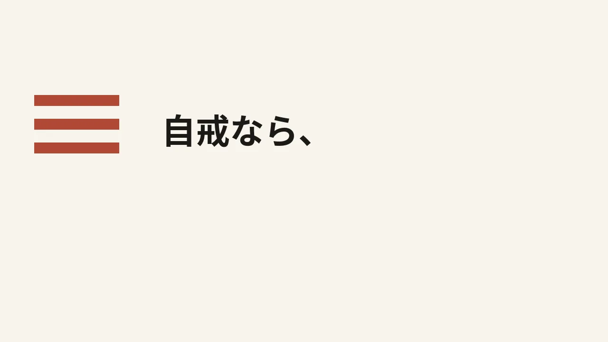

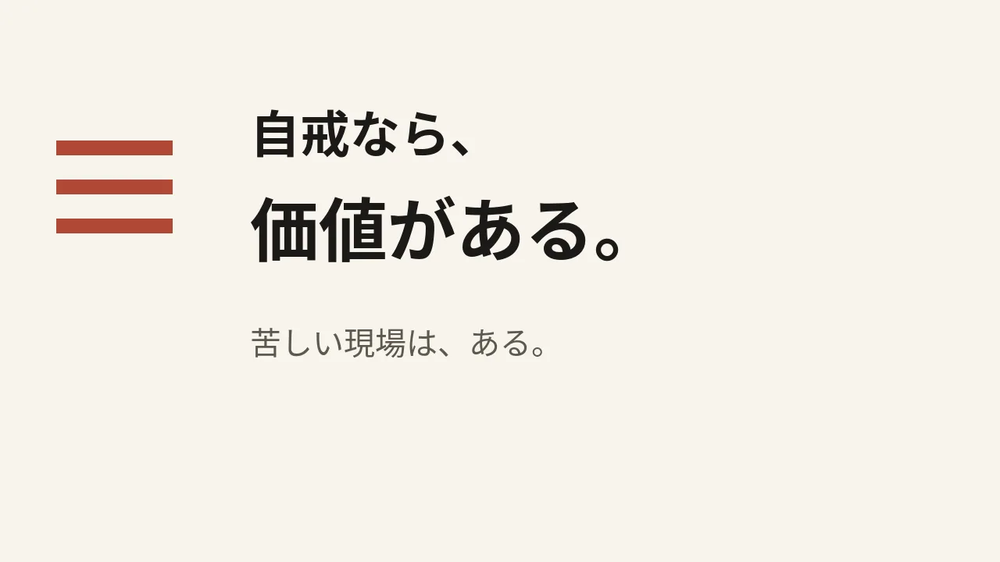
自戒なら、
価値がある。
苦しい現場は、ある。
管理する側が、自分の関わりを省みる言葉としては、価値があります。苦しい思いをしている現場があるのも、事実です。だからこそ、自分を省みるきっかけにするのは健全です。
左に珊瑚の三本、右に墨の二段、その下に灰の一行。三本は02の列の名残で、文言は載せません。価値の二段が主役で、現場の一行は決め語より小さいまま残します。
- 三行が左の三本へ縮む。文言は棒の外へ退きます。
- 「価値がある。」は声の「価値があります」に、塊のまま大きく着地する。
- 「苦しい現場は、ある。」は声の「事実です」に合わせ、灰のまま下に残す。読む間、三本は左へ、文字の塊は右へ流す。
- 三本のいちばん上の棒が、04の閉じた枠の上辺になる。
三本から価値の語へ、横にパンします。寄るのは図の層だけで、灰の留保が端で切れない位置で止めます。
図形と文字。自戒の価値と、苦しい現場があることは、声でも画面でも残します。
先生では、ない。
0:42.5–1:03.8 / 21.3秒 ・ 前提 ・ 声106字／画面26字

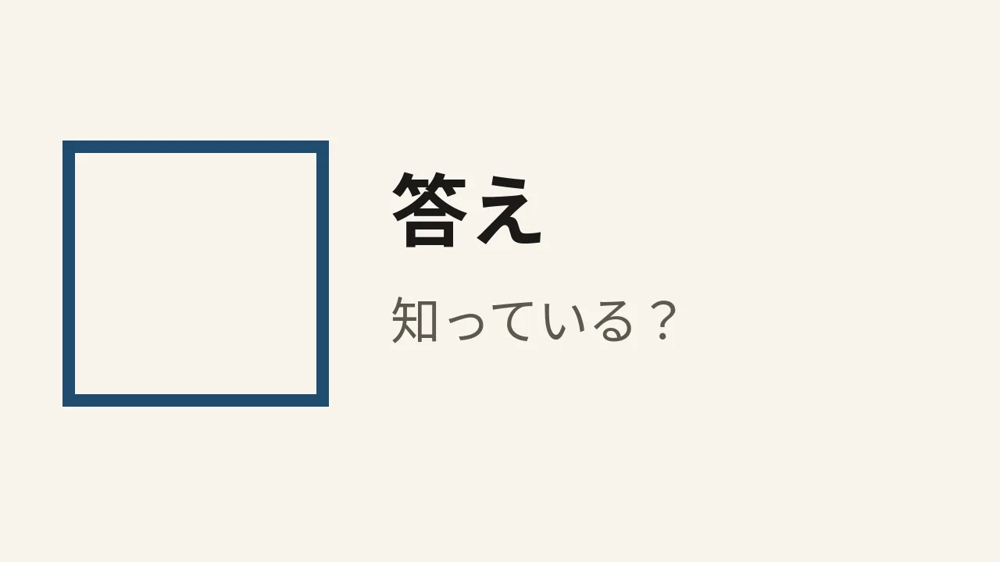

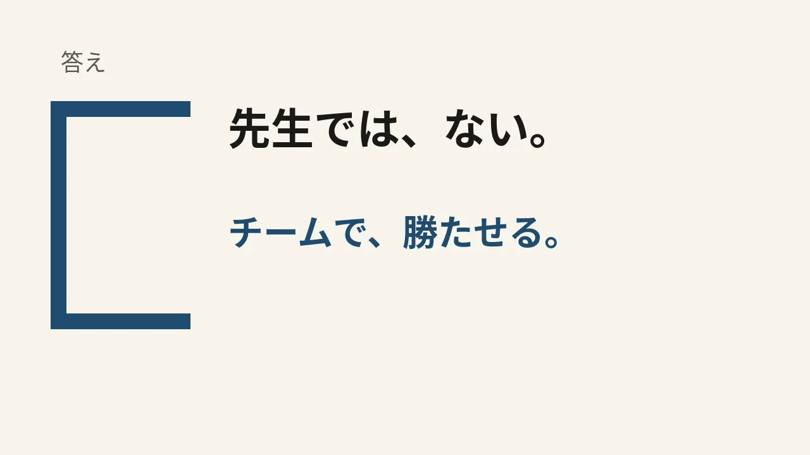
答え
知っている？
先生では、ない。
チームで、勝たせる。
その要求の奥には、マネージャーは答えを知っている、という前提があります。先生ではありません。コンサルティングファームのように経験の差が圧倒的なら、教える構図は成り立ちます。本来の仕事は、チームで勝たせることです。
はじめは左の閉じた四角、右に大きな「答え」と灰の問い。字は枠の中に入れません。おわりは右が開いた三辺、上に小さな「答え」、右に墨の「先生では、ない。」と藍の「チームで、勝たせる。」。円はここには出しません。
- 閉じた枠と「知っている？」は、声の「答えを知っている」に合わせて入る。
- 声の「先生ではありません」で右の辺が外れ、「先生では、ない。」が塊で着地する。
- 声の「チームで勝たせること」で「チームで、勝たせる。」が開いた側から入る。経験の差の例は声だけに置き、読む間は開いた枠と二段を逆へ流す。
- 開いた辺が退き、05の左側の大きな語へ渡す。
閉じた枠へ寄ってから、辺が外れる方向へ引いて二段が読める幅まで戻します。
図形と文字。コンサルティングファームは声の例で、ロゴも社名の看板も描きません。教える構図が成り立つ場合は、声に残します。
両輪が、要る。
1:03.8–1:26.2 / 22.4秒 ・ 両輪 ・ 声112字／画面20字

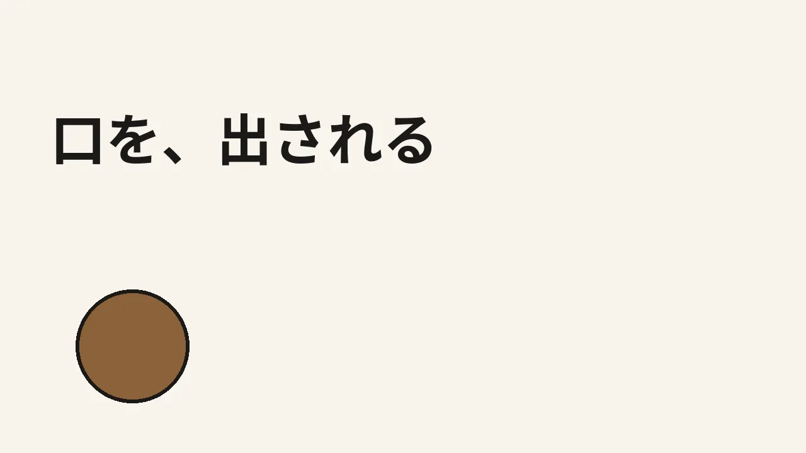

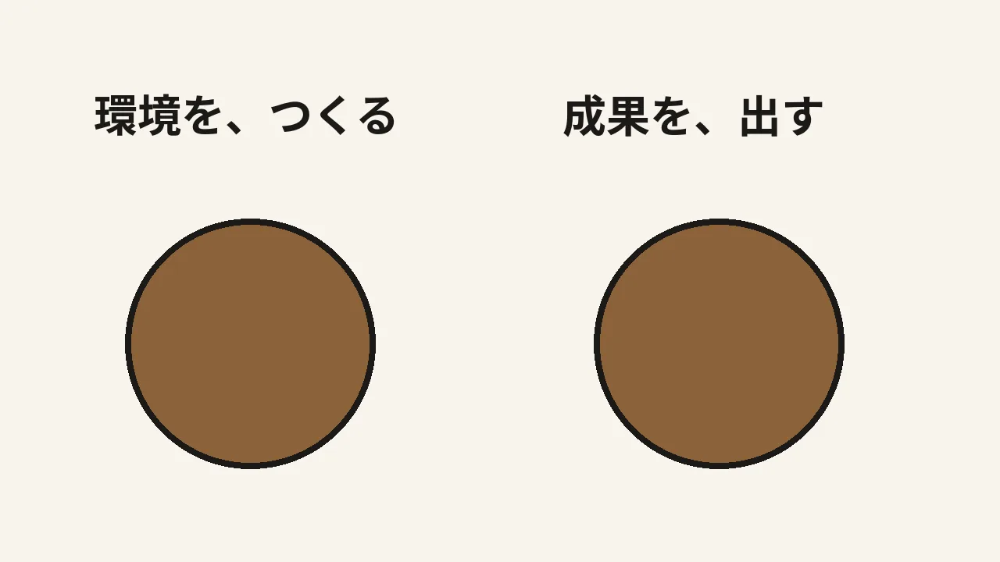
口を、出される
環境を、つくる
成果を、出す
細かく口を出されるのは、任せるには危ういと思われている仕事ぶりかもしれません。信頼されれば、報告だけで託されます。それでも、環境をつくるのはマネージャーです。成果を出すのは、メンバーです。両方がそろって、関係は成り立ちます。
はじめは左に寄った大きな一行と、その下の円一つ。右は空いています。おわりは左右同じ高さの二行と、同じ大きさ・同じ色の円二つです。円の中に字は入れません。片方を珊瑚にして責める色にはしません。
- 「口を、出される」は声の「口を出される」に着地する。円は一つだけ、左下に入る。
- 声の「環境をつくるのは」で左の行が「環境を、つくる」に替わり、声の「成果を出すのは」で右の行と二つ目の円が奥から来る。
- 二つの円は同じ大きさで揃って止まる。読む間、円は図の層で少し回り、文字は正面のまま逆へ流す。
- 二つの円が左右の外へ退き、06の中央に空きをつくる。
一つの円から、二つの円が同じ大きさで並ぶところまで引く。回り込みは円の層だけです。
図形と文字。人の姿は描きません。厳しい見方は声の前半に残し、画面の最後は両輪です。
スーパーマンでは、ない。
1:26.2–1:41.6 / 15.4秒 ・ 留保 ・ 声74字／画面23字

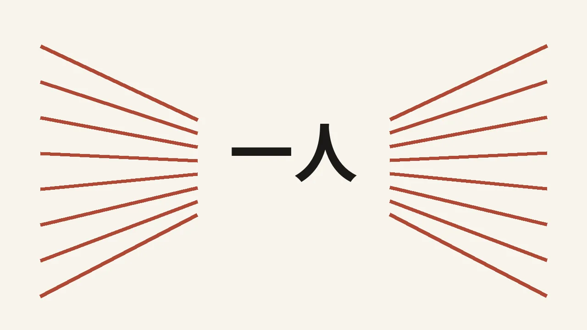

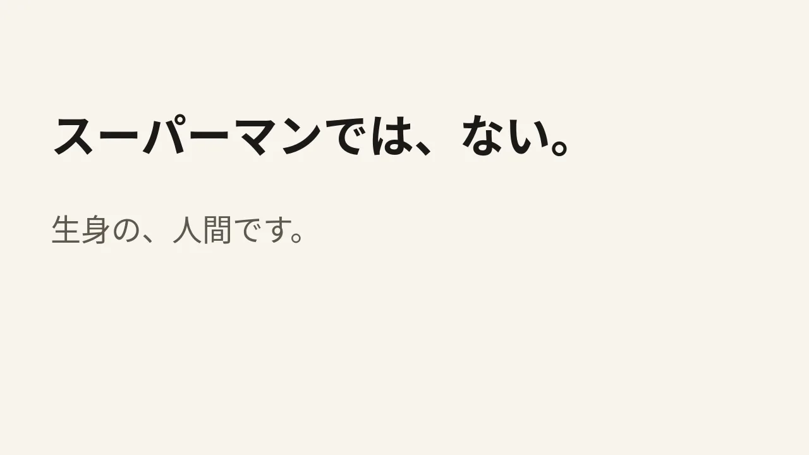
一人
スーパーマンでは、ない。
生身の、人間です。
近くても、遠くても、少し外れると批判されます。三人でも、十人でも、全員に完璧な加減は、一人には重すぎます。一人の人間に、スーパーマンは求めすぎです。
はじめは画面の中央に「一人」だけ。珊瑚の短い線は左右から向き、語に触れません。おわりは横の大きな一行と、その下の灰の一行。線は残しません。05の円とは別の形です。
- 「一人」が中央に着地し、声の「三人でも、十人でも」で短い線が左右から伸びて、語の手前で止まる。
- 線は語に届かないまま、声の「スーパーマンは求めすぎ」で左右へ落ちる。「スーパーマンでは、ない。」がその空きに着地する。
- 「生身の、人間です。」は声の「一人の人間に」に合わせ、決め語より小さく残す。
- 中央の空きを、07の外向きの矢印が横切る。
「一人」へ寄ってから、大きな一行が幅を使うところまで引く。線は図の層で、文字に重ねません。
図形と文字。人数は声の例で、人の点や顔にはしません。環境をつくる側でも生身であることは、この灰の行に残します。
自分の立場で、考え抜く。
1:41.6–2:06.6 / 25.0秒 ・ 本人の結論 ・ 声110字／画面29字

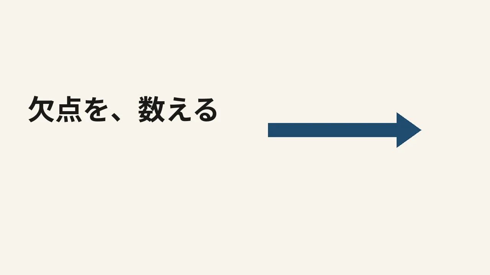

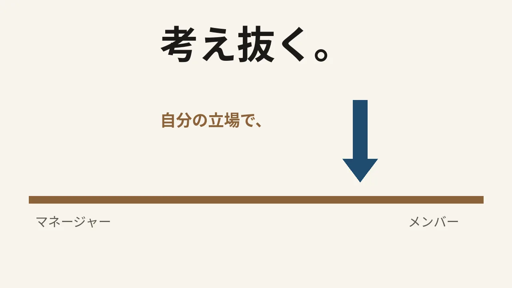
欠点を、数える
考え抜く。
自分の立場で、
マネージャー
メンバー
先生でも、スーパーマンでもありません。互いの立場で、成果をつくります。完璧なマネジメントは、最初からありません。相手の欠点を数えるのではなく、自分の立場で何ができるかを考え抜く。良い組織をつくる道は、そこに行き着きます。
はじめは左の一行と、右へ抜ける矢印。おわりは上の特大「考え抜く。」、その下に粘土色の「自分の立場で、」、矢印は下の粘土色の線を向きます。線の下の左右に「マネージャー」と「メンバー」。二つの語は同じ大きさで、矢印はどちらの語も指しません。
- 「欠点を、数える」と外向きの矢印は、声の「欠点を数えるのではなく」まで残る。
- 声の「互いの立場で」から矢印が半回転を始め、二つの立場の語が左右から線の上へ入る。声の「最初からありません」のあいだも、矢印の回転は止めません。
- 「考え抜く。」は声の「考え抜く」に着地し、矢印の頭が線に着く。「自分の立場で、」はその横に残す。
- 声の結びを受け取る約3秒、上の語と線を一つの塊として寄せて拡大する。そのあと画面を横へ振ってライムの全面へ渡す。白く光らせて切り替えません。
外向きの矢印を追ってから、戻る回転の厚みが見えるよう図の層だけ少し引く。最後の振りは、ロゴの動きが始まる前に終えます。読ませる語は床に寝かせません。
図形と文字。01の矢印が、相手ではなく自分の立場へ戻った状態で閉じます。
エンドロゴ
2:06.6–2:12.1 / 5.5秒 ・ 制作表示 ・ 声0字／画面0字

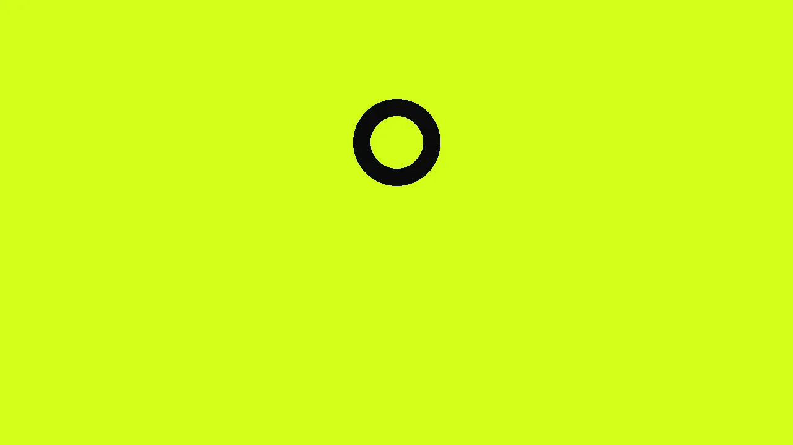

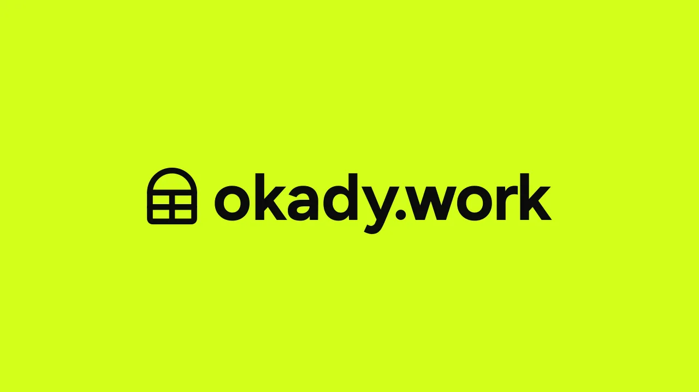
なし（ロゴのみ）
なし
背景は #d2ff1a。ロゴは中央。形、書体、色、比率は変えない。本編の要素は重ねません。
- 0–2.6秒：原本 SVG の o の落下、バウンド、定位置への移動。
- 2.6–3.2秒：全体が左へスライド。3.0–4.0秒：「.work」が一文字ずつ出現。
- 4.0–5.5秒：完成状態を1.5秒保持する。BGMもここで収める。
ロゴの区間は固定。本編からの振りは、この動きが始まる前に終えます。
リポジトリ直下の okady-work-logo.svg。フレーム時刻から再現します。

詳細（ここから下は補足）
声・文字・素材の分担
| 担当 | 受け持つこと | 扱い |
|---|---|---|
| 声 | 向きの違い、自戒の価値、苦しい現場、教える構図が成り立つ場合、チームの仕事、任される側の見方、一人には重いこと、結論 | 画面の短い語と意味を合わせる。画面の全文の朗読にはしない。カット単位のまとまった文で渡す。 |
| 文字 | 一文、自戒と要求、要求の三行、価値、先生ではないこと、両輪、スーパーマンではないこと、考え抜く | 説明の全文は載せない。主語が要る場面は二段まで使う。 |
| 図形 | 言葉の向きの矢印、要求の列と三本、答えの枠、二つの円、一人に届かない線、自分の立場の線 | 一つの形に複数の意味を持たせない。対応は記号と色。 |
ナレーションありの構成です。音声の制作は制作側の担当で、音源がまだ無いことは引き渡しを止める理由にしません。
主張・根拠・留保の対応
| 役割 | 内容 | カット |
|---|---|---|
| 主張 | 同じ一文でも、自戒として受け取るのと、相手への要求として突きつけるのとでは意味がまるで違う。 | 01・02 |
| 留保 | 自戒としては価値がある。苦しい現場があるのも事実で、自分を省みるきっかけにするのは健全。 | 03 |
| 留保 | 経験の差が圧倒的なら、教える構図は成り立つ。マネージャーは何でも知っているわけではない。 | 04 |
| 根拠 | 仕事はチームで勝たせること。口を出される側の仕事ぶりと、環境をつくる側がそろって関係は成り立つ。 | 04・05 |
| 留保 | 近くても遠くても批判される。三人でも十人でも、一人に完璧な加減は重すぎる。スーパーマンは求めすぎ。 | 06 |
| 結論 | 先生でもスーパーマンでもない。互いの立場で成果をつくる。自分の立場で何ができるかを考え抜く。 | 07 |
原稿の文との対応、画面の文言と要約の区別、この動画に載せなかった論点は references.md。
企画側／制作側
| 企画側で用意するもの | 制作側で仕上げるもの |
|---|---|
| 現行の文言、声の原稿、配分、絵コンテ16枚、原稿との対応、演出の採否 | three.js と文字層の実装、細かな動きと同期、声、BGM、効果音、代表区間の試作と全編の書き出し |
| 静止コマの文字配置の点検 | 動いている全カットの安全域と重なりの検査、実速再生、音の終わり方の確認 |
企画と絵コンテはこの一式です。音声と本編は制作側が担当します。画像や動画が追加で必要になったら、必要な内容を企画側へ返します。制作側は動画AIで新規の素材を作りません。
requestAnimationFrame のループを本編の動きにしません。デザインシステム（映像の文字・色・グリッド）
紙色 #F7F4EC、墨 #1C1917、灰 #5E584F、矢印の藍 #1F4B6E、要求の珊瑚 #B04834、自分の立場の粘土色 #8C6239。ライム #d2ff1a はロゴだけに使います。文字は Noto Sans JP、見出し700–900、補足400–500。制作側が OFL に沿って用意します。このフォルダには同梱しません。企画書の配色とは別です。紙色の上の図は、輪郭か、紙より暗い面にします。
| 段 | 1920×1080の参考値 | 用途 |
|---|---|---|
| 大きな語 | 140–200px | 01の「なってはいけない。」、04の「先生では、ない。」、06の「スーパーマンでは、ない。」、07の「考え抜く。」 |
| 主文 | 80–120px | 02の三行、03の「価値がある。」、05の二つの動詞 |
| 短い語 | 40–64px | 自戒と要求のラベル、03の灰の行、06の「生身の、人間です。」、07の立場の名 |
外側余白は96pxを目安にします。文字の安全域は左右64px、上下48px。1280×720の絵コンテでは左右48px、上下36pxです。01は左右が入れ替わる二段、02は三行の列、03は左の三本と右の二段、04は枠と右の語、05は一つの円から同じ二つの円、06は中央の一語から横の一行、07は上の特大と下の線です。
動きの言語
| 動作 | 意味と使う場所 | 読む間・次へのつながり |
|---|---|---|
| 矢印が裏返る | 01で自分へから相手へ。07で相手の側から、自分の立場の線へ戻る。 | 一つの形のまま回す。着地のあと塊を流し、07は結びの約3秒も寄せて拡大してからロゴへ渡す。 |
| 行が裏返る | 02。一文の三行が、要求の三行に替わる。 | 真横の瞬間に文言を替える。読めるあいだは字形を傾けたままにしない。列は03の三本へ縮む。 |
| 枠が開く | 04。答えを知っている、という閉じた前提の右が外れる。 | 外れた辺の側から、チームで勝たせる語が入る。 |
| 円が二つになる | 05。片方だけの円が、同じ大きさの二つになる。 | 止まったあとも円を回し、左右へ退いて06の中央を空ける。 |
| 線が届かない | 06。一人への期待が、語の手前で止まり、落ちる。 | 落ちたあと大きな一行を着地させ、中央の空きを07の矢印へ渡す。 |
拍の目安は108–116 BPM。01の反転、02の三行目、04の枠が開く瞬間、07の着地をアクセントに合わせます。留保の区間にも流れを残します。1字ずつの常時の揺れ、拍ごとの脈動、文字の崩壊は使いません。文字を読ませるために画面全体を静止させず、文量、動かす層、構図で調整します。イージングの値と秒の同期は制作側の裁量です。決め語を声のどの語に合わせるかは、各カットに書いてあります。
記号と色
| 記号 | 意味 |
|---|---|
| 墨の大きな語 | 本人の決め語。01の一文、04の「先生では、ない。」、07の「考え抜く。」 |
| 藍の一本の矢印 | 言葉の向き。自分へ向くとき自戒、相手へ向くとき要求。07では自分の立場の線へ戻る。人の数ではない |
| 珊瑚の三行と、その印 | 相手へ突きつけた要求。02だけ文言を持つ。03では三本の棒として残り、消したことにしない |
| 珊瑚の短い線 | 一人の人間へ向かう過剰な期待。06だけ。語の手前で止まり、藍の矢印とは別の形 |
| 閉じた藍の枠、開いた三辺 | 答えを知っている、という前提。04だけ。開くと、その前提が外れる |
| 同じ粘土色の円、二つ | 環境をつくることと、成果を出すこと。05だけ。中に字は入れない。色も大きさも揃える |
| 粘土色の線 | 自分の立場。07だけ。矢印が着地する場所で、マネージャーとメンバーのどちらも指さない |
| 灰の小さな語 | 留保。03の「苦しい現場は、ある。」、04の「知っている？」、06の「生身の、人間です。」 |
| 粘土色の「自戒」「自分へ」「自分の立場で、」 | 言葉が自分の側を向いている状態。要求の珊瑚とは分ける |
キャラ設定
人物、顔、手、吹き出しの尾は描きません。05の円も、06の「一人」も、人の姿ではありません。「マネージャー」と「メンバー」は07の線の下の語だけで、体や年齢や性別では分けません。
差し替え候補
画像も動画も使いません。矢印の反転、行の裏返り、開く枠、二つの円、届かない線は、制作側の図形で描きます。
矢印は01、02、07に続きます。円は05だけ、届かない線は06だけです。同じ矢印の一部だけを実写や生成映像にはしません。AI生成の映像と画像は未承認で、この企画では生成しません。矢印の反転と行の裏返りはモーショングラフィックスで表現できるため、動画AIの対象にしません。
素材
| ファイル | 役割 | 使用区間 |
|---|---|---|
assets/storyboard/cut-XX-start.webp と cut-XX-end.webp | 絵コンテ16枚。1280×720、明るい紙色。08はライム | 本編に貼る完成素材ではない |
| okady-work-logo.svg | エンドロゴ | 08の全区間。リポジトリ直下の原本。一式を移すときもこの相対位置を保つ |
新たに取得する写真、動画、フォントファイルはありません。Noto Sans JP は制作側が用意します。
音
BGMはこの作品のために作ります。乾いた打楽器、短いピアノ、輪郭のある低音。108–116 BPMを目安に、01の反転、02の三行目、04で枠が開く瞬間、07の着地を支えるアクセントを付けます。曲を遅くして、画の動きを弱めません。説教のような重い持続音には寄せません。過去作品の音源は使わず、特に20261007の企画で雰囲気が合わないとされた音源は使いません。
ナレーションは落ち着いた会話調で、カット単位の文として渡します。短い句へ細かく割って、抑揚を壊さないようにします。読みは「自戒＝じかい」「省みる＝かえりみる」「託されます＝たくされます」「三人＝さんにん」「十人＝じゅうにん」「加減＝かげん」「一人＝ひとり」「外れる＝はずれる」「勝たせる＝かたせる」。コンサルティングファーム、スーパーマン、マネジメントはそのままの語で読みます。
音源はロゴの終わり2:12.1まで覆い、最後の1.5秒で収めます。効果音は、矢印が向きを変える瞬間と、02で行が正面に戻る瞬間に必要な分だけ付けます。冒頭、02、05、07–08で画と合わせて試し、声を隠さないことと運動感を確認します。
声、BGM、効果音のファイルは制作側が用意します。有料の音楽生成の候補は Lyria 3.5（ユーザー指定の候補名。実行時にモデルID、提供状況、料金を確認）。ローカル制作と、品質・時間・費用で比べた理由を一行残して選びます。ナレーションの候補は Gemini 3.8 Flash TTS、または Eleven v4。名称はユーザー指定の候補で、実行時に識別子を確認します。キーは環境変数から読み、値は書きません。
根拠
原稿との対応は references.md。演出候補の確認と採否は effects-direction.md。採否の履歴を、本編の作業手順には混ぜません。
完成条件・確認状態
- 01と07で、自戒と要求では意味が違い、結びは自分の立場で考え抜くことまで本人の結論で閉じる。
- 03は、自戒の価値と、苦しい現場があることを、声と画面に残す。04は、教える構図が成り立つ場合を声に残し、画面は先生ではないことと、チームで勝たせることで閉じる。06は、一人に完璧を求めすぎることを残す。
- 05の最後は、環境と成果が同じ大きさである。人物、顔、吹き出しの尾、実名、イベント名、企業ロゴは出さない。
- 矢印は一つの形で、01と07で向きが変わる。02の三行は、資料の見出しの写しにしない。一つの形に、向きと要求と両輪を兼任させない。
- 章表示、テロップ帯、エンドクレジット、白フラッシュは入れない。エンドロゴはライムの単独画面で、原本の動き、中央、1.5秒の保持、音の終了を再生して確認する。
- 絵コンテ16枚（1280×720）を、左右48px・上下36pxの安全域、文字同士、文字と図形（塗り、線、枠、円、矢印）の交差で検査した。はみ出し0、文字同士の重なり0、文字と図形の交差0。ロゴの字形と、08はじめの環はこの検査の文字対象外。終了ロゴのインクは安全域の内側（左269px・上307px・右1010px・下429px）。この検査は静止コマの配置で、本編の合格ではない。
- 本編は未制作。実速再生は未確認。制作側は全カットを0.25秒ごとに取り、左右64px・上下48pxの安全域、文字同士、文字と図の交差を検査する。声の語の時刻と画面の変化を並べ、3秒以上変化のない区間を名指しする。最初の試作は01→02。そのあと05、07–08、最後に全編と音を確認する。